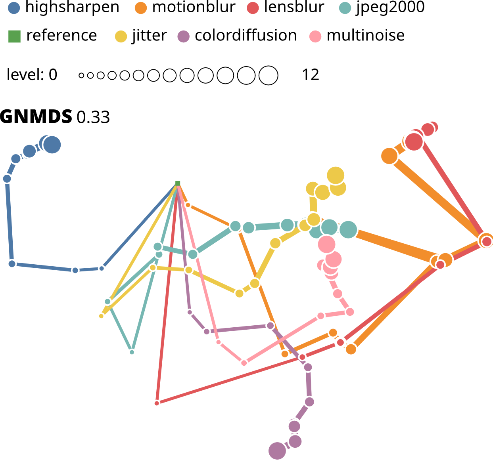

An Image Quality Dataset with Triplet Comparisons for Multi-dimensional Scaling


Authors. Mohsen Jenadeleh, Frederik L. Dennig, Rene Cutura, Quynh Quang Ngo, Daniel A. Keim, Michael Sedlmair, Dietmar Saupe
Venue. QoMEX (2024) Short Paper
Type. Short Paper
Abstract. In the early days of perceptual image quality research more than 30 years ago, the multidimensionality of distortions in perceptual space was considered important. However, research focused on scalar quality as measured by mean opinion scores. With our work, we intend to revive interest in this relevant area by presenting a first pilot dataset of annotated triplet comparisons for image quality assessment. It contains one source stimulus together with distorted versions derived from 7 distortion types at 12 levels each. Our crowdsourced and curated dataset contains roughly 50,000 responses to 7,000 triplet comparisons. We show that the multidimensional embedding of the dataset poses a challenge for many established triplet embedding algorithms. Finally, we propose a new reconstruction algorithm, dubbed logistic triplet embedding (LTE) with Tikhonov regularization. It shows promising performance. This study helps researchers to create larger datasets and better embedding techniques for multidimensional image quality. The dataset includes images and ratings and can be accessed at https://github.com/jenadeleh/multidimensionalIQA-dataset/tree/main.